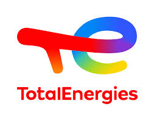
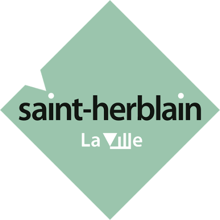
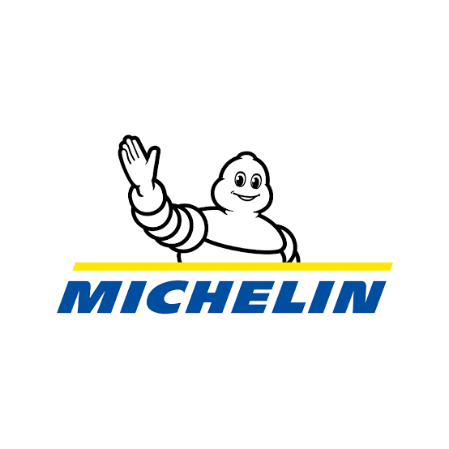
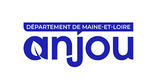
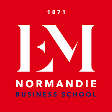
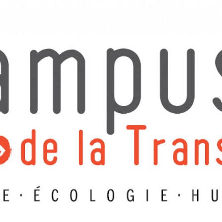
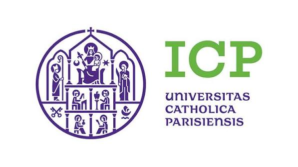

🏢 Entreprises & organisations
Sensibiliser vos équipes, structurer votre démarche de décarbonation, nourrir vos séminaires.
Des interventions qui allient rigueur intellectuelle et envie d’agir — pour des publics professionnels, académiques ou citoyens.

Se projeter concrètement dans un monde bas carbone : les leviers, les ordres de grandeur, les arbitrages — et l'élan qui revient quand on remplace les slogans par des faits.
Cocréé en 2022 avec Amaury Lethu, l'atelier a été animé pour plus de 300 personnes à Valence Romans Agglo, pour la direction Sustainability de TotalEnergies, pour l'ensemble des agents de la Ville de Saint-Herblain, pour des directeurs de BU de Michelin, pour des associations…
Ils ont vécu l'atelier



La dernière partie de l'atelier est personnalisable selon les besoins de votre organisation.

Une vision d'ensemble des enjeux écologiques — pas seulement le carbone : eau douce, azote, biodiversité, acidification des océans…
J'en suis le créateur. La fresque existe en plus de dix langues et a été animée sur tous les continents, notamment chez Carbone 4, chez Omexom (Vinci Énergies) et chez Décathlon.
Ils ont vécu la fresque
Le dernier module est personnalisable selon le secteur et les besoins de votre organisation.
Prise de parole incarnée, rigoureuse et dynamique, sur les enjeux de la décarbonation, les frontières planétaires et l'agriculture durable.
Chaque conférence est adaptée à votre public et à votre actualité ; d'autres sujets sont possibles.
Ils m'ont invité à parler

Être au contact des étudiants est une passion… qu'ils me rendent bien.
Les cours partent de cas concrets et d'ordres de grandeur, et s'adaptent au niveau des étudiants comme à la durée du module.
Où j'enseigne



Des notes de fond pour éclairer une décision, un débat public ou une stratégie sectorielle.
Ma connaissance généraliste de la transition énergétique et ma rigueur me permettent d'entrer dans le fond des dossiers et de les relier avec d'autres enjeux.
Ils m'ont commandé des notes
Sensibiliser vos équipes, structurer votre démarche de décarbonation, nourrir vos séminaires.
Cours, ateliers et conférences pour étudiants, doctorants ou programmes de formation continue.
Ancrer la transition dans vos territoires, accompagner élus, agents et citoyens.
Vous avez un projet, un événement, un besoin spécifique ? Décrivez-moi votre contexte, je vous propose une intervention adaptée.